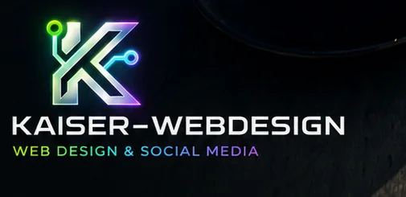
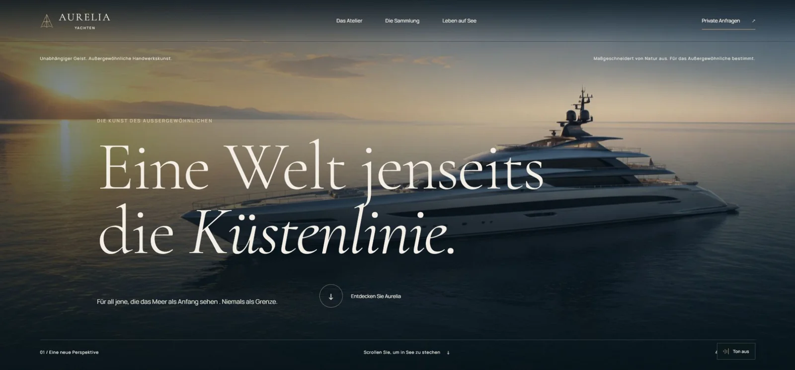
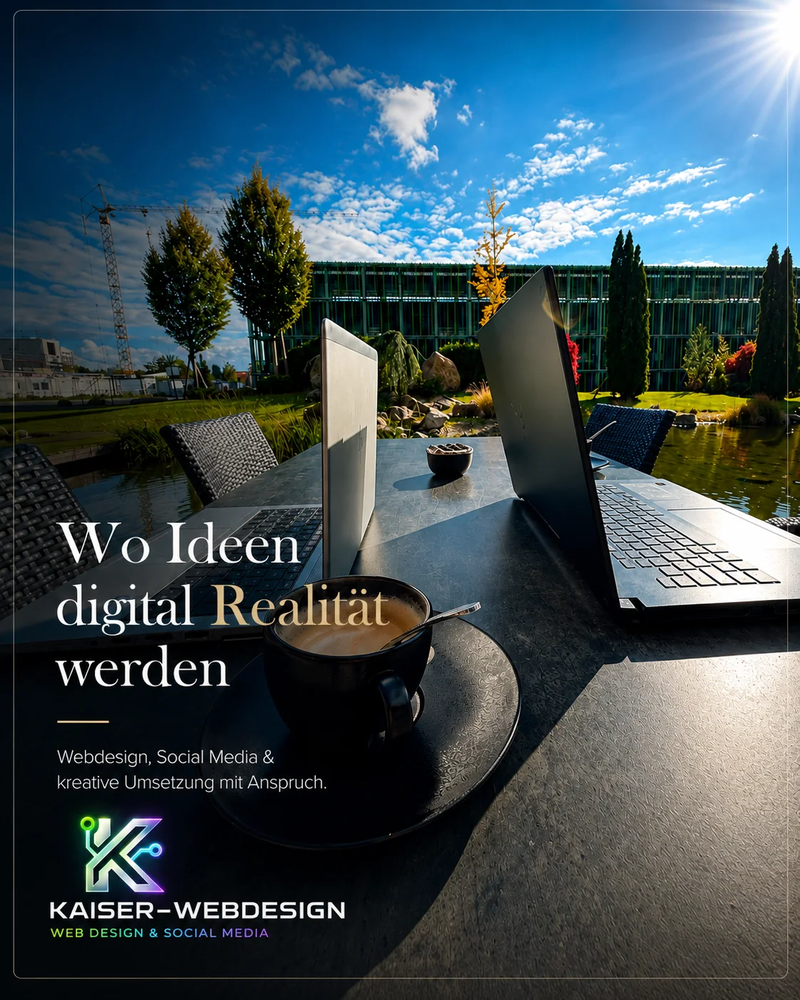
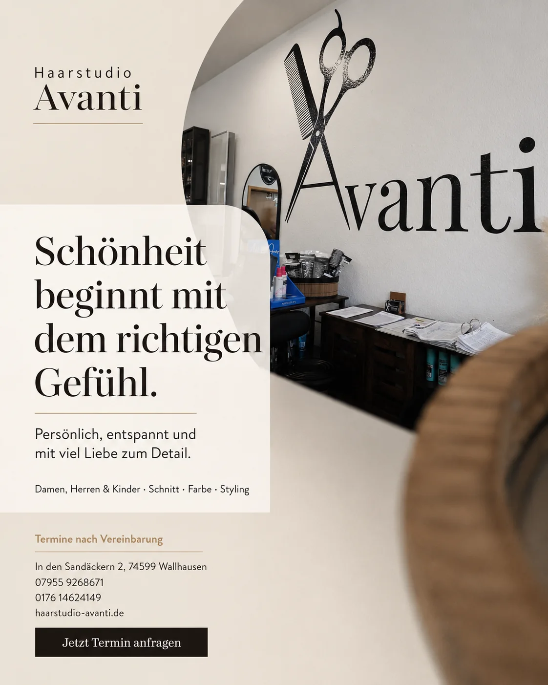
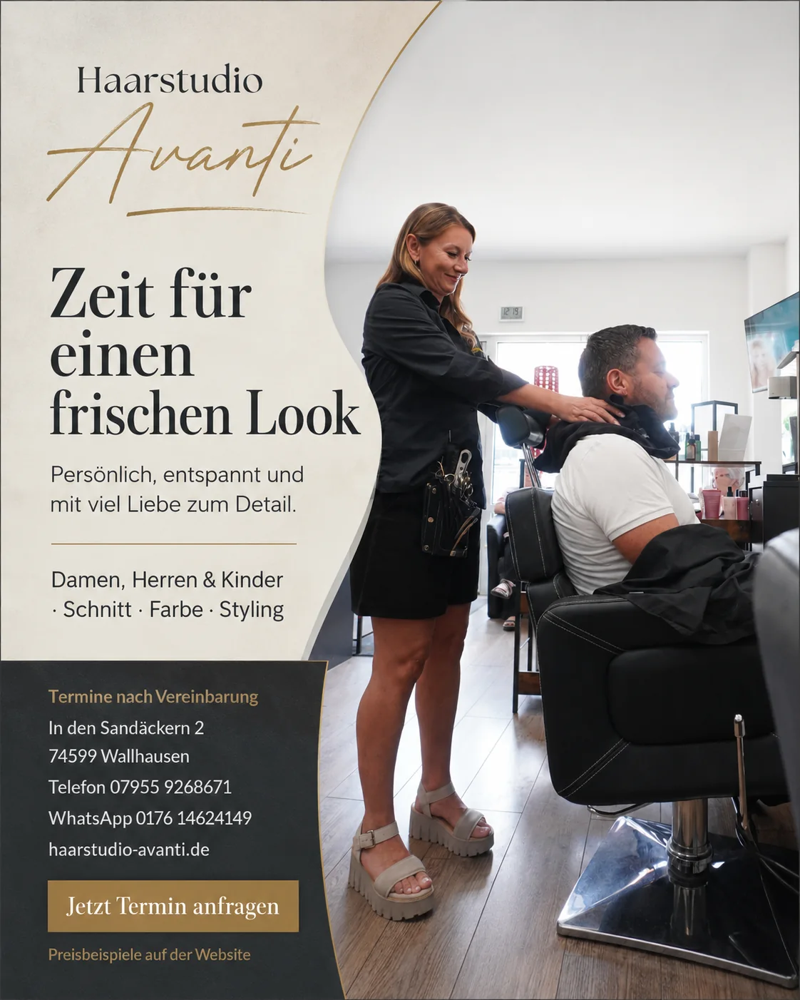
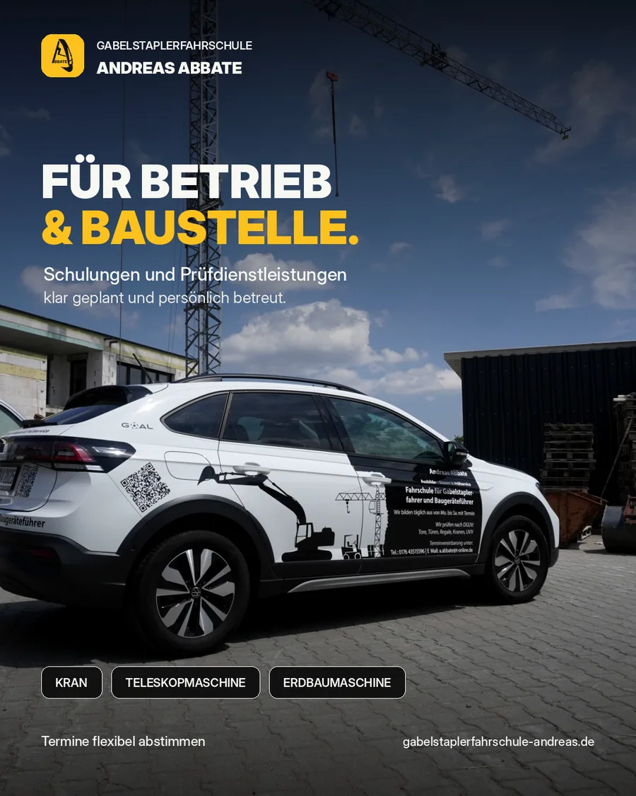
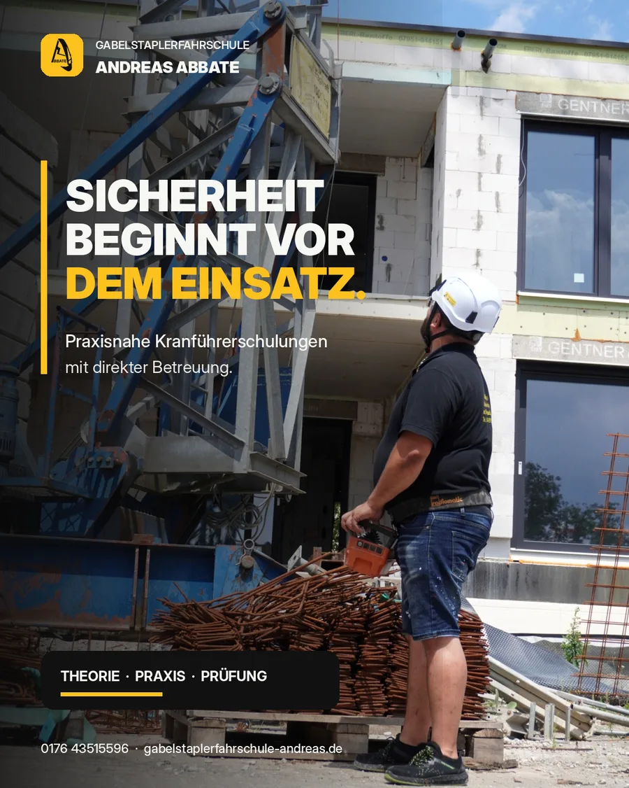
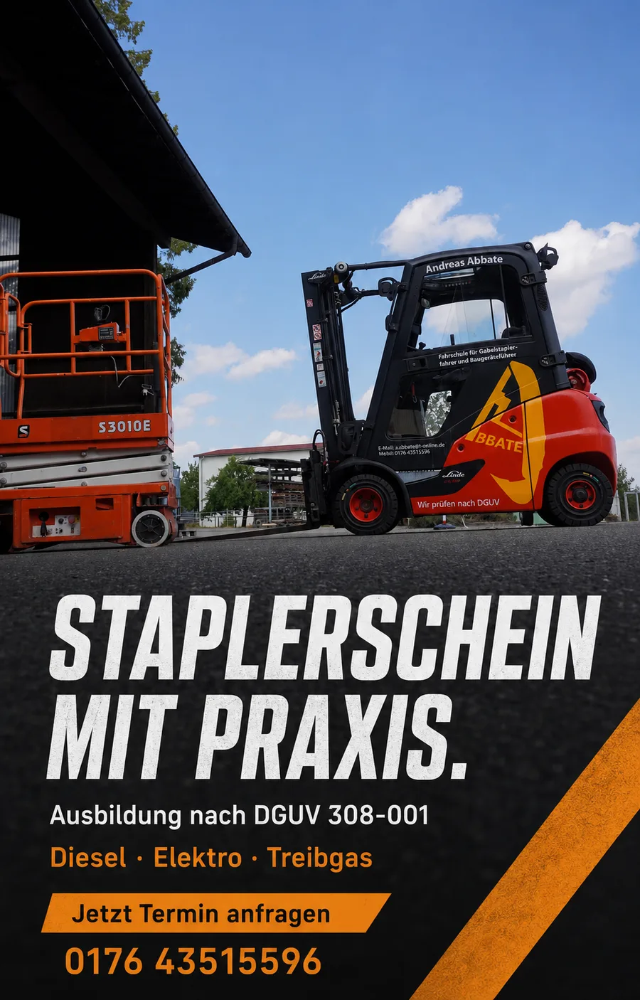

SPEDITION & LOGISTIK
ANKA Transport
Klare Leistungen. Echte Fahrzeuge. Ein Auftritt, der Professionalität sichtbar macht.

KAISER WEB DESIGN / SELECTED WORK 2026
Nicht einfach online. Sondern unverwechselbar.
Individuelle digitale Auftritte, die Marken sichtbar machen, Vertrauen schaffen und Menschen erreichen. Mit Haltung gestaltet und bis ins Detail durchdacht.
01 — 06 Ausgewählte Arbeiten · Individuelles Webdesign

01 / AUSGEWÄHLTE WEBSITES
Von der Spedition bis zur freien Rednerin. Sechs Projekte, sechs individuelle Antworten auf die Frage, wie ein starker digitaler Auftritt aussehen kann.
PROJEKT / AUSWAHL01 — 06
SPEDITION & LOGISTIK
Klare Leistungen. Echte Fahrzeuge. Ein Auftritt, der Professionalität sichtbar macht.
WEITERE ARBEITEN — ENTDECKEN

Typografie · Film · Interaktion
Eine fiktive Yachtmarke, erzählt wie ein Film. Nach dem Einstieg steuert dein Scrollen die Szenen vom Atelier bis aufs offene Meer.
Nicht einfach „eine Website“






Dein nächstes Projekt
Du willst einen digitalen Auftritt, der nach deinem Unternehmen aussieht – nicht nach einem Template? Dann schauen wir uns dein Projekt gemeinsam an.